Power Report - Widgets - Olap
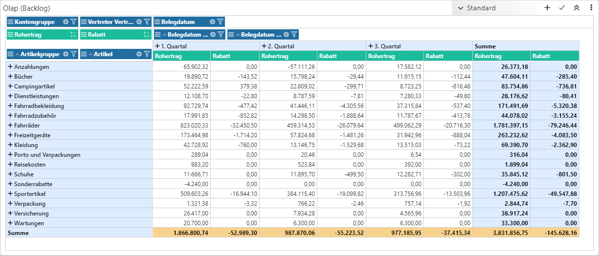
Mit Hilfe des Widgets "Olap" (Online Analytical Processing) wird das Datenmaterial in Form eines Olap-Würfels ausgegeben. D.h. das Datenmaterial kann mehrdimensional betrachtet werden, wobei ein auf- und zuklappen der Daten möglich ist.
Hinweis
Pro Power Report-Vorlage können maximal 4 Olaps eingefügt werden.
Folgende Spezialfunktionen stehen in diesem Widget zur Verfügung:
Ø Ansichten
Über die Kopfleiste des Olap-Widgets können individuelle Darstellungsansichten erstellt und ausgewählt werden.
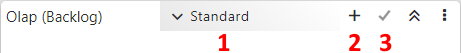
ü Ansicht (1)
Mit Hilfe einer
Auswahlliste kann die Ansicht ausgewählt werden.
ü neue Ansicht (2)
Mit Hilfe des
Buttons "neue Ansicht" kann eine neue Ansicht erzeugt werden. Die Angabe des
Namens findet hierbei über den automatisch eingeblendeten Bereich Ansichten Verwaltung statt.
ü Ansicht speichern (3)
Durch
Anwahl des Buttons "Ansicht speichern" wird der aktuelle Aufbau des Olaps
(inklusive Filterungen und Sortierung) in der gewählten Ansicht gespeichert.
Hinweis
Die Ansicht "Standard" ergibt sich aus den Einstellungen des Olaps und kann nicht überschrieben werden. Des Weiteren wird die optional einzustellende "Summenberechnung" nicht in der Ansicht gespeichert.
Ø Verschieben von Datenfeldern und Measures
Die in den Einstellungen definierten Datenfelder und Measures werden im Olap dargestellt. Per Drag & Drop können die Datenfelder zwischen den Bereichen "Zeilen", "Spalten" und "Filter" verschobenen werden. Die Measures wiederum können temporär in den Bereich "Filter" gelegt werden.
Beispiel
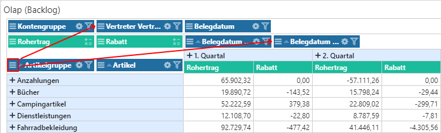
Ø Datenfilter
Durch Anwahl des Icons wird der Datenfilter geöffnet. Über diesen kann eine temporäre Filterung durchgeführt werden, wobei auf aktivie Filterungen durch eine Umfärbung der Überschriftelemente hingewiesen wird.
Beispiel
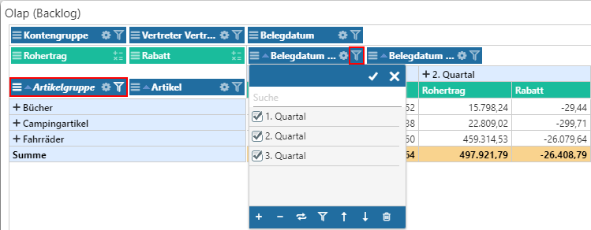
Ø Datenfeldeinstellungen
Durch Anwahl des Icons , welches bei Datenfelden angeboten wird, stehen die folgenden Spezialfunktionen zur Verfügung:
ü alle Ebenen auf- /
zuklappen
Durch Anwahl dieser Funktion werden alle Einträge aus dem Bereich
"Zeile" oder "Spalte" auf- bzw. zugeklappt.
Ø Summenberechnung
Handelt es sich um eine Measure, so kann durch Anwahl des Icons die Summenberechnung temporär beeinflusst werden. Folgende Berechnungsvarianten stehen zur Verfügung:
ü Summe (SUM)
Mit dieser Option
werden alle Werte der Ebene klassisch aufsummiert. Diese Berechnung stellt den
Standard dar.
ü Anzahl (COU)
Mit dieser Option
wird angezeigt, wieviel Datensätze in der Ebene vorhanden sind.
ü Kleinste (MIN)
Mit dieser
Option wird der kleinste Wert der Ebene in der Summe angezeigt.
ü Größte (MAX)
Mit dieser Option
wird der größte Wert der Ebene in der Summe angezeigt.
ü Durchschnitt (AVG)
Mit dieser
Option wird der durchschnittliche Wert der Ebene ausgewiesen.
ü Durchschnitt - ohne 0
(AVG0)
Mit dieser Option wird der durchschnittliche Wert der Ebene
ausgewiesen, wobei alle Einträge mit 0 ignoriert werden.
Einstellungen
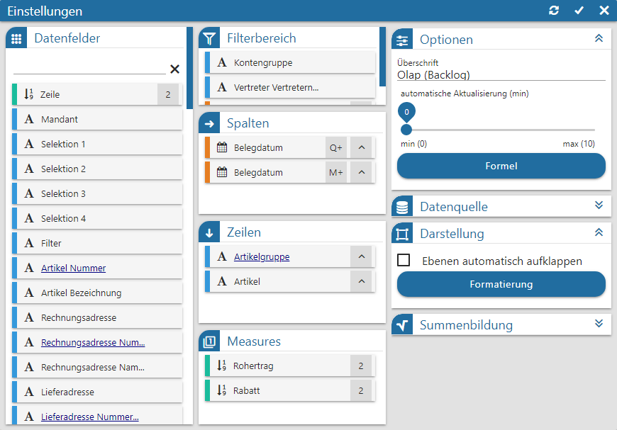
Folgende Eingabefelder, Einstellungen und Informationen stehen zur Verfügung:
Datenfelder
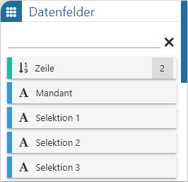
Ø Tabelle "Datenfelder"
In dieser Tabelle werden alle Felder der Datenquelle dargestellt, welche per Drag & Drop in die Tabellen "Filterbereich", "Spalten", "Zeilen" und "Measures" übergeben werden können. Der Power Report unterscheidet hierbei nach den folgenden Datentypen:
ü  - Alphanumerisch
- Alphanumerisch
Es handelt sich um ein
Feld mit alphanumerischen Inhalt.
ü  - Text
- Text
Es handelt sich um ein Feld mit
Langtext.
ü  - Bild (Grafik)
- Bild (Grafik)
Es handelt sind um ein
Feld mit einem Bild als Inhalt. Zur besseren Darstellung wird anstatt der Grafik
der Name des Bilds im Widget angezeigt.
ü  - Datum
- Datum
Es handelt sich um ein Feld des
Typs "Datum", wobei das Darstellungsformat selber bestimmt werden darf. Hierfür
muss nur das Symbol  neben der
Beschreibung des Felds angeklickt werden, wodurch sich die folgende Auswahl
öffnet:
neben der
Beschreibung des Felds angeklickt werden, wodurch sich die folgende Auswahl
öffnet:
ü
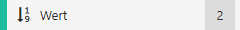
- Zahl (Measure)Es handelt sich um ein Feld mit numerischen Inhalt. Die Steuerung der Nachkommastellen erfolgt über die Anwahl des Symbols
 neben der
Beschreibung des Felds, wobei die Einträge "0 NK" bis "10 NK" zur Verfügung
stehen.
neben der
Beschreibung des Felds, wobei die Einträge "0 NK" bis "10 NK" zur Verfügung
stehen.
ü
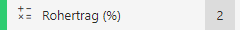
- Zahl (Measure / Formel)Es handelt sich um ein Feld mit numerischen Inhalt, welches über eine Formel erstellt wurde. Die Steuerung der Nachkommastellen erfolgt über die Anwahl des Symbols
neben der Beschreibung des Felds,
wobei die Einträge "0 NK" bis "10 NK" zur Verfügung stehen.
Hinweis
Mit Hilfe der Suchzeile kann über eine Volltextsuche nach Datenfeldern gesucht werden, wobei das %-Zeichen als Platzhalter verwendet werden kann.
Filterbereich
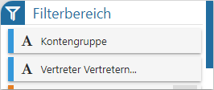
Ø Tabelle "Filterbereich"
In dieser Tabelle werden jene Felder hinterlegt, welche im Standard außerhalb der Olap-Bereichs liegen sollen. Diese Datenfelder können zur Filterung (via "Datenfilter") genutzt oder temporärer in den sichtbaren Bereich geschoben.
Spalten
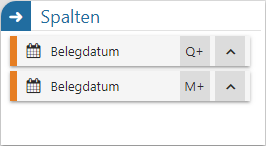
Ø Tabelle "Spalten"
In dieser Tabelle werden jene Felder zugewiesen, welche
innerhalb des Olaps die Spalten definieren. Durch Anwahl des Symbols  kann der Inhalt der Spalten auf- oder
absteigend sortiert werden.
kann der Inhalt der Spalten auf- oder
absteigend sortiert werden.
Zeilen
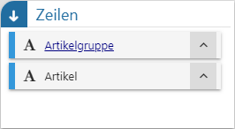
Ø Tabelle "Zeilen"
In dieser Tabelle werden jene Felder zugewiesen, welche
innerhalb des Olaps die Zeilen definieren. Durch Anwahl des Symbols kann der Inhalt der Zeilen auf- oder
absteigend sortiert werden.
Measures
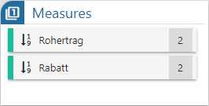
Ø Tabelle "Measures"
In dieser Tabelle werden die Felder des Typs "Zahl"
eingefügt, auf deren Grundlage der Inhalt des Würfels gebildet werden soll.
Durch Anwahl des Symbols kann pro
Measure die Anzahl der Nachkommastellen definiert werden.
Optionen
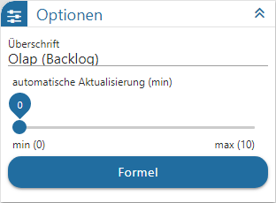
Ø Überschrift
An dieser Stelle wird die Bezeichnung des Olaps definiert.
Ø automatische Aktualisierung (min)
An dieser Stelle kann definiert werden, ob sich der Inhalt des Olaps automatisch aktualisieren soll. Mit der Einstellung "0" findet keine Aktualisierung statt.
Ø Formel
Sollten individuelle Berechnungen innerhalb des Olaps benötigt werden, so können diese über den Bereich Formel geschaffen werden.
Datenquelle

Ø Datenquelle
Dieses Informationsfeld zeigt den Namen der zu Grunde liegenden Datenquelle an.
Ø Datenherkunft
An dieser Stelle kann mit Hilfe einer Auswahlliste definiert werden, aus welchem Bereich der Datenquelle die Daten des Widgets stammen sollen. Die Auswahl "aktuell" steht immer zur Verfügung und spiegelt die im Ausgangsfenster gewählte Datenquelle (temporäre Datenquelle, Snapshot, View oder MasterView) wieder.
Hinweis
Gibt es für die Datenquelle mehrere Snapshots, so sind diese über den Eintrag "xxx (statisch)" (xxx => Name der Auswertung) zusammengefasst. Innerhalb der Snapshots erfolgt die weitere Selektion über den Widget Filter.
Ø  Widget Filter
Widget Filter
Durch Anwahl dieses Buttons wird das Fenster Widget Filter geöffnet. In diesem kann die genutzte Datenquelle nach frei definierbaren Kriterien eingeschränkt werden.
Hinweis
Handelt es sich nicht um eine importiere Datenquelle, so werden die folgenden Selektionskriterien automatisch vorgegeben, wobei ein Editieren selbstverständlich möglich ist:
ü Mandant
Es wird durch die
Filterzeile "Mandant = aktuell" automatisch auf die Daten des aktuellen Mandaten
eingegrenzt.
ü Selektion 1 bis 4 / Filter
Es
wird automatisch auf die Daten jenes Snapshots eingegrenzt, über welchen der
Power Report ausgegeben wurde. Die Filterzeilen hierzu lauten "Selektion X =
aktuell" bzw. "Filter = aktuell".
Hinweis
Mit Hilfe des Widgets Datenquellen Info ist jederzeit nachvollziehbar, was sich gerade hinter "aktuell" verbirgt (Einstellung "Aktuelle Sel.").
Darstellung
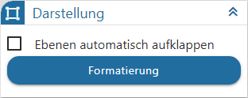
Ø Ebenen automatisch aufklappen
Mit Hilfe dieser Option kann definiert werden, ob die Ebenen im Olap standardmäßig auf- oder zugeklappt dargestellt werden sollen.
Ø  Formatierung
Formatierung
Um direkt auf "wichtige" Measures aufmerksam gemacht zu werden, steht im Olap die Formatierung zur Verfügung. Diese ermöglicht es, Zahlen nach bestimmten Regeln gesondert darzustellen.
Beispiel
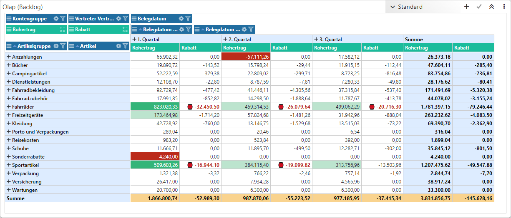
Summenbildung
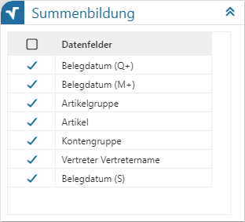
Tabelle "Summenbildung"
Im Standard wird über die Ebene jedes Datenfelds vom Olap eine (Zwischen)Summe gebildet. Wenn dies nicht gewünscht ist, so kann es durch Entfernen der Checkbox entsprechend definiert werden.
Buttons

Ø Aktualisierung
Mit Hilfe dieses Buttons werden die Einstellungen gespeichert, direkt angewendet und das Einstellungsfenster bleibt geöffnet.
Ø Ok
Durch Anwahl des Buttons "Ok" werden die Änderungen angewendet und das Fenster geschlossen.
Ø Ende
Durch Anwahl des Buttons "Ende" wird das Einstellungsfenster geschlossen und nicht gespeicherte Änderungen verworfen.